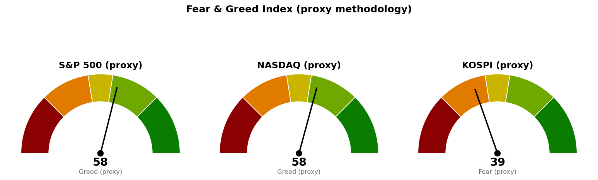

미국 지수·섹터·금리·유가는 2026년 9월 10일 뉴욕 정규장 종가 확정치이고, 코스피와 니케이 225는 한국시간 9월 11일 12시 01분 기준 장중 수치입니다. 아시아 두 지수의 마감값은 바뀝니다.
| 직전에 건 조건 | 판정 | 근거 |
|---|---|---|
| S&P 500이 7,675.69 아래에서 정규장을 마치면 되돌림으로 격상 | 충족 | 9월 10일 종가 7,591.70으로 조건선 아래 마감 |
| 브렌트유가 96.28달러 아래로 되밀리면 '에너지 주도' 판단 폐기 | 미충족 | 브렌트유 107.80달러로 오히려 상승 |
| 변동성지수(VIX, 시장이 예상하는 향후 30일 주가 등락폭)가 20을 넘어설 것 | 미충족 | 17.84 (전일 16.46, +8.38%) |
첫 조건이 충족됐으므로 직전 브리핑이 예고한 대로 관찰에서 경고 단계로 올립니다. 직전과 달라진 것은 하락의 성격입니다 — 9월 9일에는 지수가 제자리인 채 에너지와 헬스케어가 정반대로 갈린 자리 이동이었고, 10일에는 11개 섹터 중 9개가 하락해 아래쪽으로 폭이 넓어졌습니다.
| 지수 | 종가/현재 | 등락 | 고가 | 저가 |
|---|---|---|---|---|
| S&P 500 | 7,591.70 | -0.58% | 7,612.86 | 7,580.06 |
| 나스닥 종합 | 26,081.72 | -0.65% | 26,178.25 | 25,979.54 |
| 코스피 (장중) | 6,862.35 | -2.44% | 6,896.32 | 6,802.50 |
| 니케이 225 (장중) | 63,469.39 | -2.76% | 64,312.02 | 63,208.63 |
S&P 500의 9월 10일 고가는 7,612.86으로 50일선 7,612.24 바로 위까지였고 종가는 그 아래인 7,591.70입니다. 20일선 7,667.62까지는 75.92포인트 남았습니다. 상대강도지수(RSI, 최근 14일 동안 오른 폭과 내린 폭의 비율을 0~100으로 나타낸 값)는 44.2로 중립인 50 아래이며, 하루 평균 변동폭(ATR)은 61.10포인트입니다. 오늘 아시아에서 코스피 -2.44%·니케이 -2.76%로 미국 지수보다 큰 폭이 나온 것은 어제 미국장의 하락을 시차를 두고 반영한 것으로 보입니다.
코스피는 6,862.35로 20일선 6,817.21 위에는 남아 있고 50일선 6,947.38 아래입니다. 아래쪽에서 참고할 가격은 9월 3일 저점 6,439.49입니다. 하루 평균 변동폭이 275.6포인트로 커서, 하루 등락폭 하나만으로 추세가 바뀌었다고 판정하기 어렵습니다.
미국 섹터 상대강도(SPDR 업종 ETF 기준, 9월 10일 종가):
| 주도 | 등락 | 부진 | 등락 | |
|---|---|---|---|---|
| 커뮤니케이션 (XLC) | +0.60% | 기술 (XLK) | -1.41% | |
| 필수소비재 (XLP) | +0.05% | 소재 (XLB) | -1.23% | |
| 금융 (XLF) | -0.33% | 유틸리티 (XLU) | -0.98% |
11개 섹터 중 오른 곳은 커뮤니케이션과 필수소비재 둘뿐이고, 3위인 금융도 -0.33%로 하락입니다. 주도섹터라고 부를 만한 곳이 없는 하루였고, 가장 많이 밀린 세 곳(기술·소재·유틸리티)은 모두 장기금리에 민감한 업종입니다. 섹터 상대강도는 미국 ETF 기준으로만 제공되며 한국·일본은 지수 등락만 있습니다.
에너지(XLE)는 -0.58%로 하락했는데 같은 날 브렌트유는 +6.51% 올랐습니다. 뒤에 적을 이란 제재 발언이 뉴욕 정규장 마감 뒤(한국시간 9월 11일 10시 07분)에 나왔으므로, 유가 상승분이 아직 에너지 주식에 반영되지 않았을 가능성이 있습니다. 다음 정규장에서 XLE가 따라 오르는지가 확인 항목입니다.
| 항목 | 현재 | 전일 | 등락 |
|---|---|---|---|
| 미 30년 국채 금리 | 5.361% | 5.286% | +1.42% |
| 미 10년 국채 금리 | 4.944% | 4.837% | +2.21% |
| 브렌트유 | 107.80달러 | 101.21달러 | +6.51% |
| 변동성지수 (VIX) | 17.84 | 16.46 | +8.38% |
10년 금리는 4.944%로 5%에 근접했고 30년은 5.361%입니다. 금리가 오르면 미래 이익을 현재 가치로 환산할 때 깎이는 폭이 커지므로, 이익이 먼 미래에 몰려 있는 기술주가 먼저 밀립니다. 어제 기술 -1.41%는 그 순서와 일치합니다. 여기에 유가가 하루 +6.51% 오르면 물가 경로가 위로 밀려 금리 부담이 한 번 더 얹힙니다.
1. 미 재무부 매입 프로그램에도 국채 금리 급등 (MarketWatch, 9월 10일) 30년 국채 입찰 수요가 부진했고 베센트 재무장관이 확대한 국채 매입 조치도 금리를 끌어내리지 못했습니다. 어제 하락의 원인이 기업 실적이나 경기 지표가 아니라 채권 쪽 수급이라는 뜻이며, 그래서 금리 민감 업종이 한꺼번에 밀리고 커뮤니케이션·필수소비재만 남았습니다. 채권 수급 문제는 하루 만에 해소되지 않으므로 다음 정규장에도 같은 압력이 이어질 수 있습니다.
2. 베센트, 이란 전략의 일환으로 월요일 대형 은행 제재 예고 (CNBC, 9월 11일 10시 07분 KST) 브렌트유가 107.80달러로 +6.51% 오른 배경입니다. 물가 지표 발표를 몇 시간 앞두고 에너지 가격이 뛴 것이라 금리 상승 압력과 같은 방향으로 작용합니다. 제재 대상이 월요일에 공개되므로 주말을 넘겨 위험이 남는 사안이며, 이 때문에 오늘 미국장에서 위험자산 비중을 늘리는 결정은 확인 없이 주말을 넘기게 됩니다.
3. 8월 소비자물가지수(CPI) 오늘 발표 (CNBC, 9월 10일) 한국시간 오늘 밤 21시 30분입니다. 9월 16일 FOMC를 닷새 앞둔 마지막 물가 지표이고, 어제 금리 급등이 이미 물가 우려를 반영한 상태에서 나오는 숫자입니다. 위 두 사안이 모두 금리·물가 쪽이라, 발표 뒤 10년 금리의 방향이 위 손절 박스 ①과 ② 중 어느 조건에 먼저 닿을지를 정합니다.
| 지수 | 점수 | 구간 |
|---|---|---|
| S&P 500 | 57.8 | 탐욕 |
| 나스닥 | 58.4 | 탐욕 |
| 코스피 | 39.3 | 공포 |

미국 두 지수는 아직 탐욕 구간(57.8·58.4)에 있습니다. 가격은 20일선 아래로 내려왔는데 심리 지표는 위험선호 쪽에 남아 있는 상태입니다. 코스피 39.3은 공포 구간이며, 미국과 한국의 차이가 점수에 그대로 나타납니다.
| 날짜 (한국시간) | 이벤트 | 확인할 것 |
|---|---|---|
| 9월 11일 21:30 | 8월 미 소비자물가지수(CPI) | 발표 후 10년 금리가 4.944% 위로 더 가는지 |
| 9월 14일 (월, 기사 발언 기준) | 이란 관련 대형 은행 제재 대상 공개 | 브렌트유가 107.80달러 위를 지키는지 |
| 9월 16일 | FOMC 금리 결정 | 장기금리 상승을 되돌릴 문구가 나오는지 |
| 9월 17일 | 주간 신규 실업수당 청구 | 고용 둔화가 금리 부담을 상쇄하는지 |
1. 신규 위험자산 편입은 중단합니다. 직전 브리핑의 관찰 조건이 충족됐고, 오늘 밤 CPI와 월요일 제재 공개까지 확인 없이 주말을 넘겨야 합니다. 2. 보유분은 유지하되 위 손절 박스 ②를 판정선으로 둡니다. S&P 500이 7,580.06 아래에서 정규장을 마치면 그때 보유분 축소를 검토하십시오. 오늘 장중 이탈만으로는 조치하지 않습니다. 3. 판단 폐기 조건이 충족되면 바로 되돌립니다. S&P 500 종가가 7,667.62를 되찾고 30년 금리가 5.286% 아래면 이 브리핑의 경고 단계를 해제하십시오.
이 문서는 참고 정보이며 투자자문이 아닙니다. 모든 수치는 위에 적은 기준 시각의 시장 자료에서 가져온 것이고, 투자 판단과 그 결과에 대한 책임은 투자자 본인에게 있습니다.